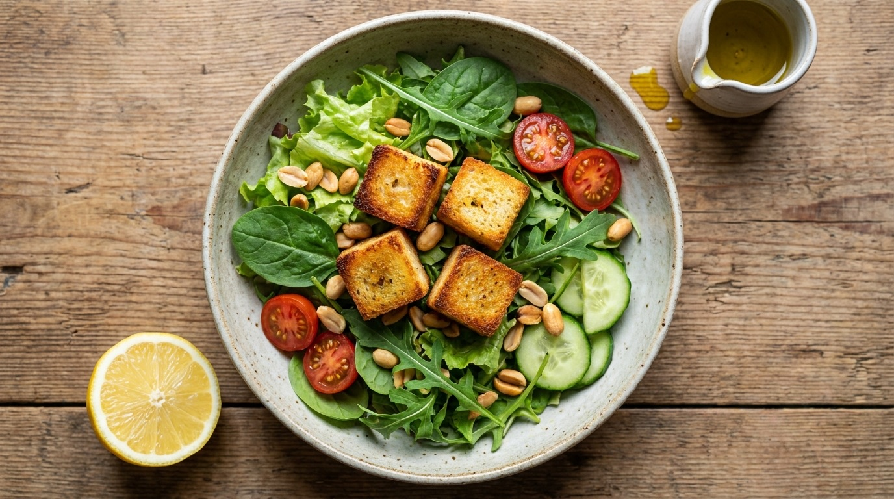

Cubey Salad Bowl
The "I have nothing to eat" 3-minute protein bowl. Cold, clean, and macro-tracked.
Cubes
4
Time
3 min
Serves
1

You'll need
- 4 Cubey cubes (straight from the fridge)
- 2 cups mixed greens — lettuce, spinach, rocket
- ¼ cup cherry tomatoes, halved
- ¼ cucumber, diced
- 1 tbsp olive oil
- 1 tsp lemon juice
- Salt and black pepper
- Optional: roasted peanuts, feta crumbles, olives
How to make it
- Greens base. Toss the greens, tomatoes, and cucumber in a bowl.
- Add cubes. Drop in the Cubey cubes straight from the fridge — no heating needed.
- Dress. Drizzle olive oil and lemon. Season with salt and pepper.
- Top. Finish with roasted nuts, feta, or olives if you have them.
- Eat. Straight from the bowl. Done.
Sound good? Tell us what you'd want from Cubey.
Share your thoughts →